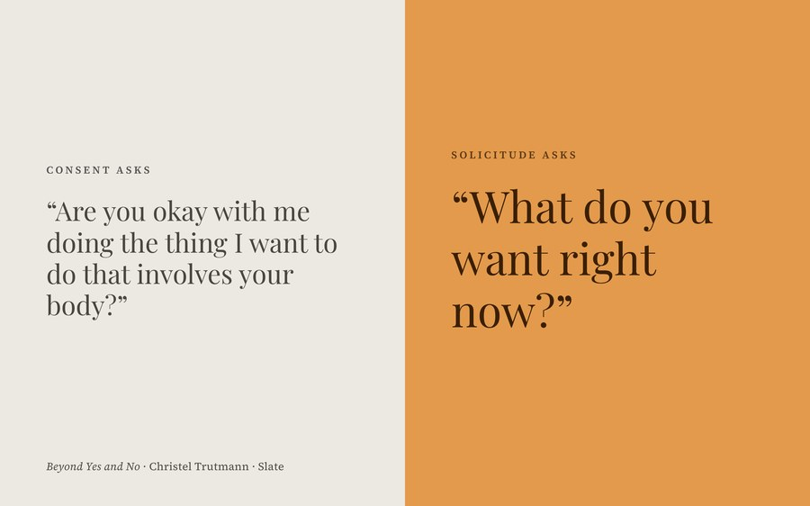
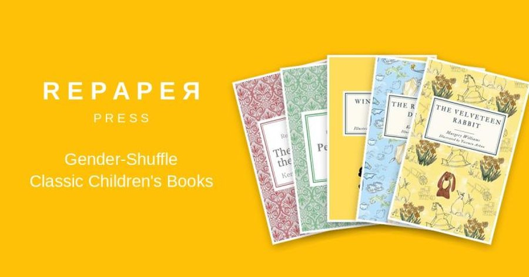

Writer · MSW candidate · Founder of Repaper Press
I write about the language of sex, consent, and gender: how the words we have, and the words we’re missing, shape what we notice, what we excuse, and what we can imagine. Through Repaper Press, I build tools for gender literacy, the ability to see how stories normalize inequality.

The Cornell case shows how our framing of sexual ethics asks victims to prove what they didn’t want, instead of asking whether the people involved cared what they did want. An argument for solicitude.
A series on the double standards built into our sexual vocabulary, and a proposal for a new, shared standard built on solicitude and consensus.

A free reading site where readers choose the gender of every character in classic children’s books, from The Wonderful Wizard of Oz to Winnie-the-Pooh. Change only gender, and what the language assumes becomes visible.
Repaper’s gender literacy framework goes beyond the Bechdel Test, asking one question of any story: does it normalize inequality? It examines a work through its world, cast, characterizations, relationships, plot goals, and writing, and is applied in afterwords to each book.
I’m a Master of Social Work candidate at the University at Albany School of Social Welfare (2027). My clinical training has included work with adolescent boys in residential treatment for sexually harmful behavior.
I grew up in Ithaca, New York, and studied international development at Cornell. Before social work, I spent nearly six years on Cornell’s emergency services team and later worked as a full-stack software engineer, the skills behind Repaper Press.